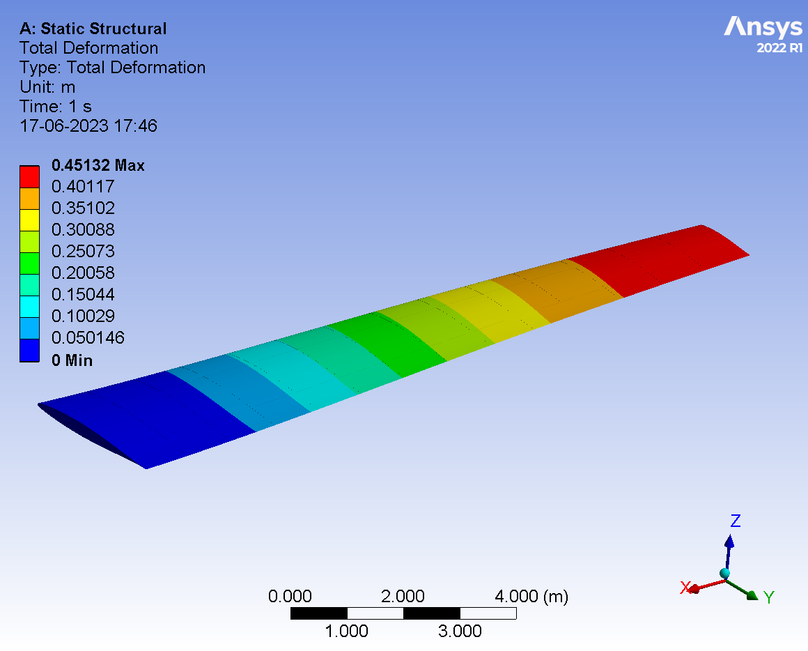
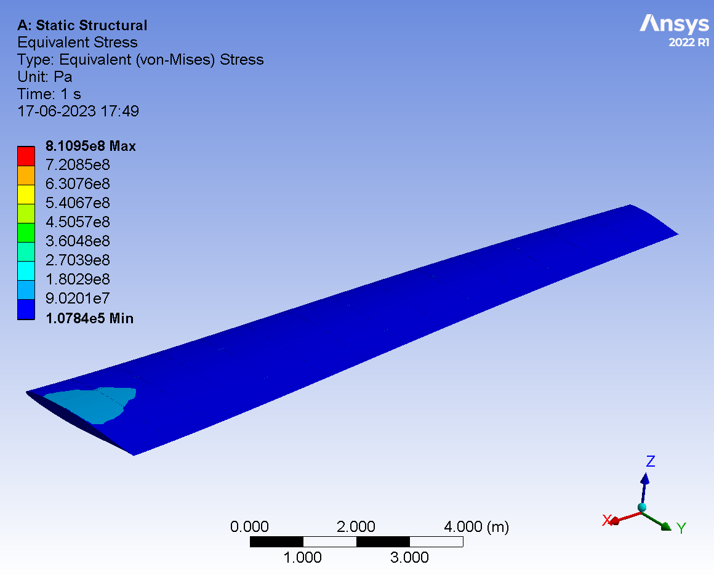
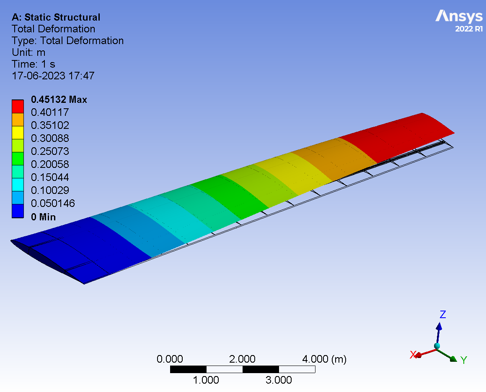
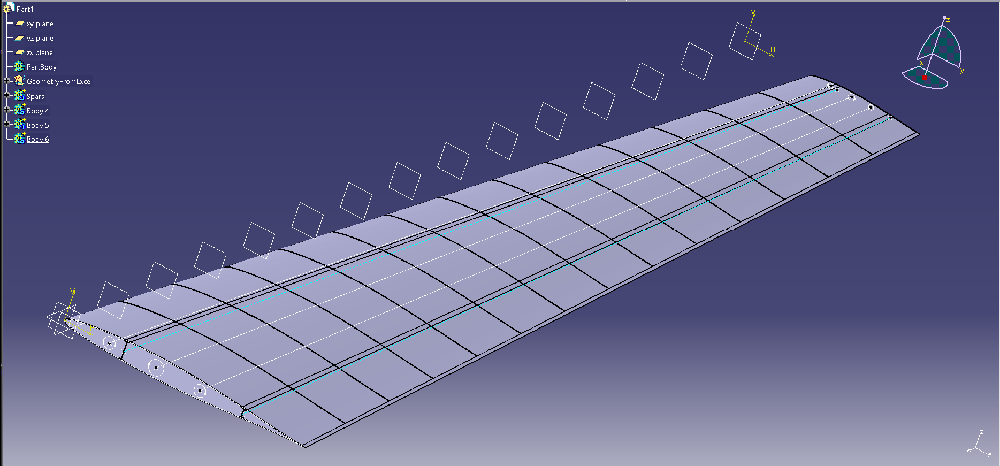
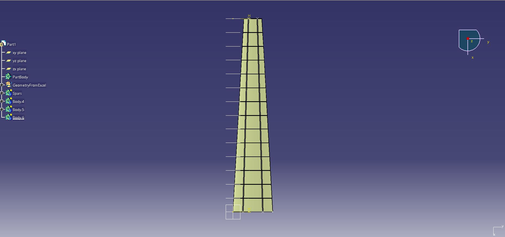

Regional Turboprop — Design Point & Wing FEA

When/Team. Bachelor project (2023), team of 4. My role: performance sizing & structural analysis.
Goal. Locate a feasible design point for a regional turboprop using a constraint/matching plot (W/S vs W/P), then model a half-span wing and evaluate static deformation and von-Mises stress.
What I did
- Derived mission/performance constraints (takeoff, climb, cruise, ceiling) and built a matching plot to select the design point.
- Selected NACA 64-108 and created a half-span 3D wing (skins, ribs, spars) with tapered planform.
- Ran Static Structural FEA in ANSYS (root fixed; lift-derived loading) and post-processed deformation & stress fields.
Tools
- Sizing equations & matching plot (W/S vs W/P)
- CAD (parametric rib/web layout)
- ANSYS Workbench — Static Structural
Key results (design point & structure)
| Maximum take-off weight (MTOW) | 38,540 kg |
|---|---|
| Wing loading, W/S | ≈ 582.1 kg/m² |
| Wing planform area, S | ≈ 66.2 m² |
| Power loading, W/P | ≈ 4.257 kg/kW |
| Total installed shaft power | ≈ 9.05 MW (twin turboprop class) |
| Max total deformation (static) | ≈ 0.451 m |
| Single-wing structural mass (model) | ≈ 530 kg |
| Airfoil | NACA 64-108 |
Load case & modeling summary
| Aspect | Summary |
|---|---|
| Boundary conditions | Wing root fixed; loads derived from spanwise lift distribution at the selected design point. |
| Structure | Sheet skins + rib/ web/ spar solids; tapered planform and realistic rib spacing (see internal layout figure). |
| Outputs | Total deformation map for global stiffness; von-Mises stress for local strength checks around root/spar joints. |
| Interpretation | Peak stresses localize near root attachments as expected; deflection gradient is smooth along the taper, consistent with the assumed load. |
Figure stack

von-Mises stress contours — maxima near the root attachments.

Deformed (scaled) vs. undeformed overlay — qualitative stiffness check.

Internal structure: ribs and spars arrangement used in the static analysis.

Planform/top view of the half-wing model used for FEA.
What this demonstrates
- Linking performance sizing (constraint analysis) to structural feasibility.
- Hands-on pipeline: constraints → design point → parametric model → FEA → clear KPIs.
- Concise communication with a metrics table and targeted figures.